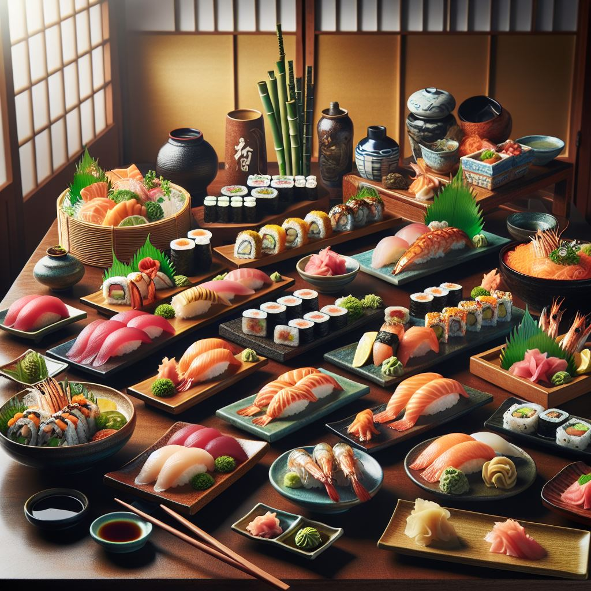

Ruokalista
Valikoimamme kattaa klassisista susheista rohkeisiin ja innovatiivisiin makuyhdistelmiin. Käytämme aina tuoreimpia kala- ja kasvisraaka-aineita, jotka hankimme tarkoin valituilta toimittajilta. Haluamme tarjota sinulle vain parasta, oli kyseessä sitten perinteinen nigiri, monipuolinen makirulla tai meidän keittiömme erikoisuudet.
Alkuruoat
- Edamame
Höyrytetyt soijapavut merisuolalla.
Hinta: 5,00 € - Miso-keitto
Perinteinen misokeitto tofu- ja wakame-merilevällä.
Hinta: 4,50 € - Tempura
Friteeratut vihannekset ja katkaravut.
Hinta: 8,50 €
Sushi
- Lohta (Sake Nigiri)
Hinta: 3,50 € - Tonnikalaa (Maguro Nigiri)
Hinta: 3,50 € - Kalanmäti (Ikura Nigiri)
Hinta: 4,00 € - Tofua (Yaki Tofu Nigiri)
Hinta: 3,00 €
Jälkiruoat
- Mochi
Japanilainen riisikakku, täytettynä jäätelöllä.
Hinta: 5,00 € - Dorayaki
Paistettu japanilainen kakku, täytettynä punapaputahnalla.
Hinta: 4,50 € - Matcha-jäätelö
Vihreä tee -jäätelö, tarjoillaan kermavaahdon kera.
Hinta: 6,00 €
Juomat
- Tee
Japanilainen vihreä tee
Hinta: 2,50 € - Virvoitusjuomat
Coca-Cola, Sprite, Fanta
Hinta: 2,00 € - sake
kuuma sake
hinta: 5.00 €
kylmä sake
hinta: 6.00 €
Kuvia
